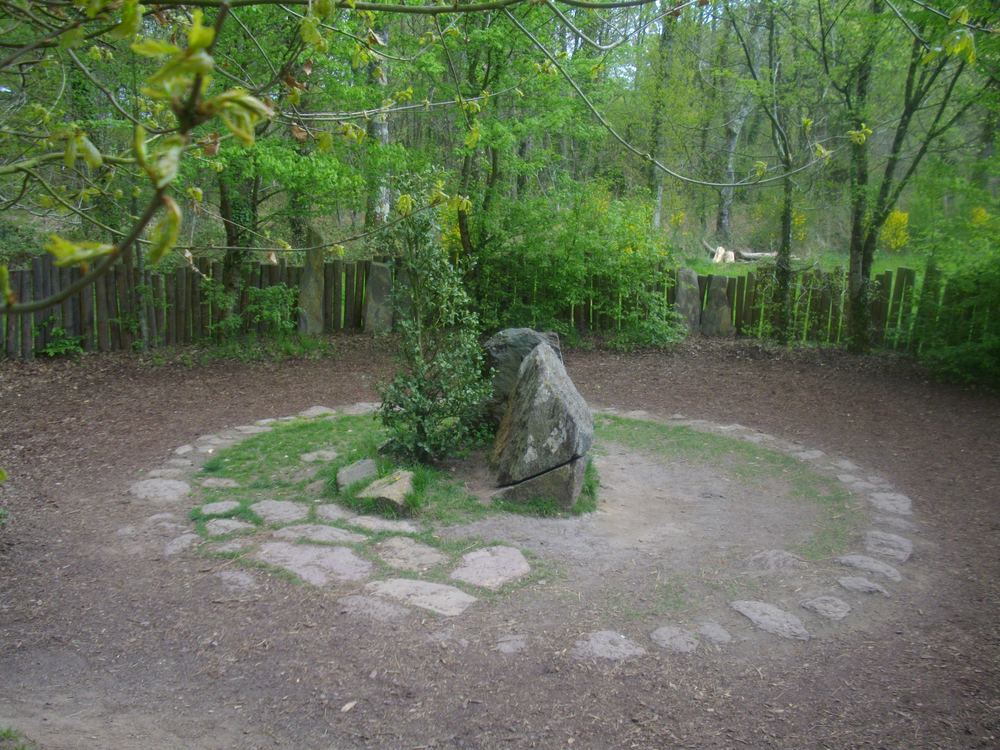

Les forêts bretonnes, les menhirs, le patrimoine architectural riche de la
Bretagne sont propices à l’émergence de nombre de croyances, légendes et contes.
La scène idéale et la plus connue pour ce genre de légendes est sans doutes la
forêt de Brocéliande, un lieu culte de la légende du Roi Arthur. Plusieurs sites
sont à visiter dans cette forêt :
- Le Val-sans-retour, où les maris infidèles étaient retenus prisonnier
par la fée Viviane,
- La fontaine de Barenton, le lieu où Merlin rencontra la Dame du Lac,
- Le tombeau de Merlin, où Merlin se fit enfermer par la fée Viviane.
La ville engloutie d’Ys, où Dahut, fille du roi Gradlon le Grand de Cornouaille,
régnait autrefois en maîtresse absolue. Un jour, elle tomba amoureuse d’un
prince étranger, qui n’était autre que le diable personnifié, et lui offrit
par amour la clé de l’écluse. Le prince ouvrit l’écluse et la cité fut engloutie
par l’océan. Seul le roi réussit à s’en sortir en abandonnant sa fille.
Aujourd’hui, les pêcheurs de Douarnenez entendent sonner les cloches de
la ville sous la mer et disent qu’un jour, Ys renaîtra plus belle que jamais.

Tombeau de Merlin dans la forêt de Brocéliande